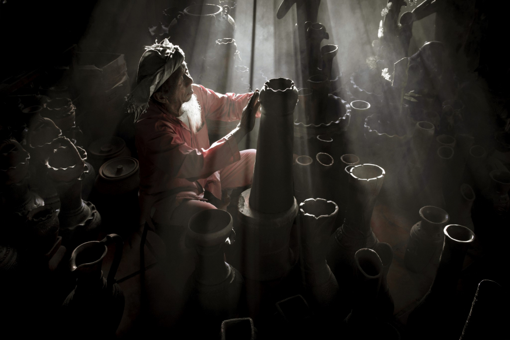
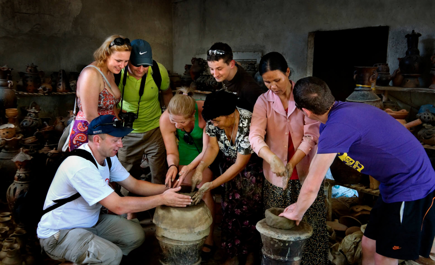

Chạm vào hồn Chăm
Bàu Trúc → Làng dệt Mỹ Nghiệp
- Thăm làng và trải nghiệm gốm
- Khám phá nghề dệt thổ cẩm

Ghé Bàu Trúc, nghe câu chuyện của người Chăm
qua những bàn tay giữ hồn gốm.
Ở Bàu Trúc, người thợ đi quanh khối đất, tạo hình bằng đôi tay và những dụng cụ giản dị. Mỗi đường nét mang dấu ấn riêng của người làm gốm.
Nghệ thuật làm gốm của người Chăm được UNESCO ghi danh vào Danh sách di sản văn hóa phi vật thể cần bảo vệ khẩn cấp năm 2022.
Đọc câu chuyện tại Vietnam Tourism ↗
Làm quen với đất, nặn hình và tạo hoa văn trong một buổi trải nghiệm lấy cảm hứng từ nghề gốm Chăm.
Chương trình và giá là dữ liệu mẫu, chưa mở đặt chỗ thực tế.
Nơi khối đất bắt đầu thành hình qua bàn tay người thợ.
Không gian dựng minh họa, chưa phải bản quét 3D của xưởng thật.
Dáng bình tròn, cổ thon và màu đất nung ấm. Một gợi ý cho góc nhà yên tĩnh.
Mô hình dựng để trải nghiệm; chưa đại diện cho sản phẩm đang bán.
Bàu Trúc → Làng dệt Mỹ Nghiệp
Bàu Trúc → Tháp Pô Klong Garai → Biển Ninh Chữ
Lịch trình gợi ý. Chưa kết nối đơn vị lữ hành hoặc nhận đặt tour.